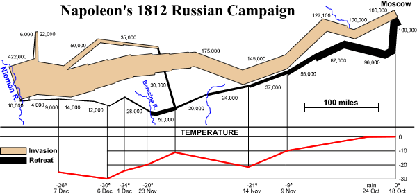

Other types of graphic
In this chapter, we have concentrated on a few commonly used types of graphical display of data. It is rare for a non-technical publication to go beyond these general-purpose graphs.
However an innovative graphic can sometime work well for a particular type of data. Two examples are given below.
If your data are of a non-standard type, you may be able to devise a novel way to clearly display them.
Napoleon's invasion of Russia
The diagram below was published by Charles Joseph Minard in 1861. Edward Tufte says that "it may well be the best statistical graphic ever drawn." (The diagram has been redrawn slightly with some place names omitted for a computer screen.)

The diagram portrays Napoleon’s disastrous campaign of 1812-1813 when his army invaded Russia. After laying siege to Moscow, Napoleon was forced to retreat by the harshness of the Russian winter. The width of the band describes the number of surviving soldiers during the invasion and retreat. It effectively illustrates where the soldiers died during the campaign. The temperature graph at the bottom shows the temperatures during the retreat.
Maori migration in New Zealand
The indigenous population in New Zealand is Maori and many of them have migrated from rural areas to the cities (mainly Auckland) in the last half century. The diagram below is based on a distorted map of New Zealand in which the areas of the regions are proportional to their Maori populations.
The widths of the arrows represent the numbers migrating between regions, as determined in a survey that was conducted in the 1960s. It clearly shows movements of the Maori population.